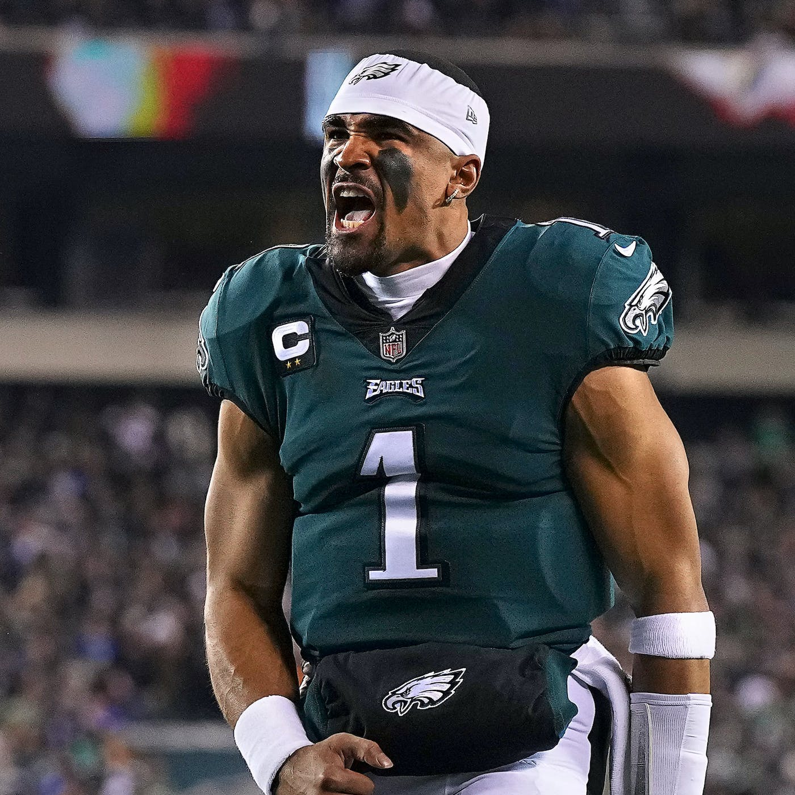

Fantasy Football is a big hobby of mine, I play in a league with my friends which has been going on for 10 years! below is a table showing my fantasy football team roster. the roster consists of a QB, 2 RB, 2 WR, 1 TE, 1 D/ST, and 7 bench players. The best players on my roster are Jalen Hurts and A.J Brown, obth players play on the Philidalphia Eagles. A picture of Jalen Hurts can be seen below.
Fantasy Football
Here is a youtube video showing Jalen Hurts highlights:
The table shows the player names, position, and fantasy football ranking for the currenty year at their position, for each player on my roster

| Player Name | Position | Position Ranking |
|---|---|---|
| Jalen Hurts | Quarterback | 2 |
| Derrick Henry | Runningback | 5 |
| Raheem Mostert | Runningback | 3 |
| AJ Brown | Wide receiver | 2 |
| Keenan Allen | Wide receiver | 5 |
| Trey McBride | Tight End | 19 |
| James Cook | Runningback | 16 |
| Saints D/ST | defense / special teams | 6 |
| Harrison Butker | Kicker | 4 |
| Amon-ra st. brown | wide receiver | 9 |
| Marquise Brown | wide receiver | 22 |
| George Kittle | tight end | 5 |
| Bills D/st | defense / special teams | 3 |
| Chubba Hubbard | Runningback | 37 |